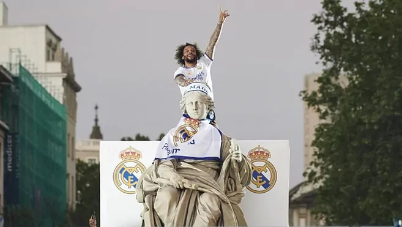
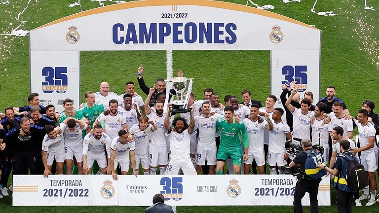
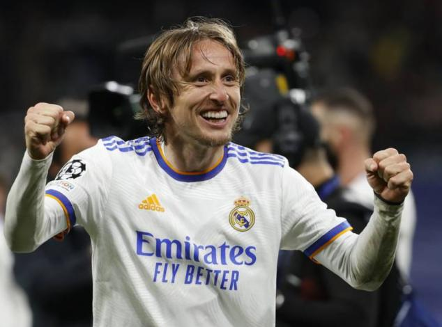
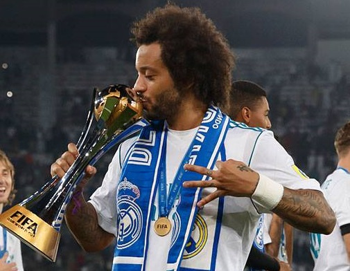

Últimas Noticias
Finalmente Marcelo llegó a su título 24 con el Real Madrid
El capitán de Real Madrid, Marcelo, se convirtió en el jugador que más títulos ganó en la historia del club capitalino después de conseguir La Liga 2021/22 con cuatro fechas de anticipación.
Un doblete de Rodrygo en la primera parte, junto con los goles de Marco Asensio y Karim Benzema en la segunda mitad sellaron la corona de la máxima categoría para el Madrid con una victoria por 4-0 sobre Espanyol.
El lateral brasileño cosechó 24 trofeos con el Merengue, incluyendo cuatro Champions, cuatro Mundiales de Clubes, tres Supercopas de Europa, seis Ligas, dos Copas del Rey y cinco Supercopas de España.

“Es lo más increíble que puede vivir un jugador”, declaró Marcelo, quien participó de 545 partidos y anotó 38 goles con el Madrid desde su debut en 2007. “Hemos ganado LaLiga gracias al trabajo de todo el equipo. Tenemos que seguir ganando. Esto es fruto del trabajo, del disfrute, del sacrificio… Hemos conseguido ganarla combinando todos los factores", agregó.
Y concluyó: “Es lo mejor que hay poder celebrar con la afición después de jugar en casa. Es lo más increíble que puede vivir un jugador. Es un día para celebrar, aunque somos conscientes de que se avecina un partido importante, pero está bien celebrar y permanecer concentrados y motivados para el miércoles".
Festejos tras un nuevo título de liga
Calendario
8/5/22
Atlético de Madrid 1-0 Real Madrid
Wanda Metropolitano
12/5/22
Real Madrid 6-0 Levante
Santiago Bernabéu
15/5/22
Cádiz 1-1 Real Madrid
Nuevo Mirandilla
20/5/22
Real Madrid 0-0 Betis
Santiago Bernabéu
Campeones de la liga
El Real Madrid pudo celebrar con su gente un título. Y la verdad es que nadie esperaba semejante respuesta, pero todo ayudó. El equipo ganó la Liga en su estadio, era media tarde de un día festivo, hacía buen tiempo y solo había que poner rumbo a la Plaza de la Cibeles después de vivir la primera fiesta en el césped del Bernabéu. Y es que, aunque parezca mentira en un club con 35 ligas ya, no celebraba una en su casa desde 2007, la famosa remontada del Madrid de Capello, tras ganar en la última jornada al Mallorca 3-1 y sufriendo.
Y lo cierto es que el fiestón nada tuvo que envidiar al de las grandes noches de Champions, a la Décima, sin ir más lejos, o la última Copa de Europa, la Decimotercera. Y es que se calcula que al menos unas 250.000 personas se agolparon en la Plaza de la Cibeles a la espera de la llegada del equipo, que lo hizo puntual, a las 20.30 horas, tras bajar por el Paseo de la Castellana escoltado por la Policía a caballo y los aficionados que les iban haciendo pasillo.

El momento cumbre llegó cuando Marcelo se subió hasta la Diosa para ponerle la bufanda del Real Madrid. De nuevo, un grito que ya se había escuchado en la fiesta en el Bernabéu. "Sí se puede", era el grito de guerra a la espera de que llegue la cita del miércoles ante el City.
Lo cierto es que el título de Liga ha dado alas a la afición. Ya creía en la remontada, pero la Liga les ha hecho venirse arriba aún más. Como no podía ser de otra manera, el fin de fiesta miró al City. De 'subidón' por el título conquistado, el Bernabéu ya empezó a preparar la remontada de Champions ante el conjunto de Guardiola. "¡Sí se puede, sí se puede!" y "¡A por el City!", fueron algunos de los cánticos que escucharon los jugadores blancos en el estadio y en su trayecto hacia la Cibeles. Después el mensaje llegaría desde la propia megafonía: "El miércoles viviremos otra noche mágica en el Bernabéu, ¡a por la final de París!".
Renovación de una gran figura
En años pasados, Luka Modric mantuvo su deseo de continuar en el Real Madrid, y el viernes 29 de abril, se pactó su renovación hasta el 2023, y hasta se habló de prolongarle su contrato un año más si el balcánico lo desea. Asimismo, el equipo merengue le ofreció un cargo una vez se consolide su retiro deportivo.

Esa prolongación estará sujeta al nivel que demuestre Luka Modric en las próximas temporadas, si es similar al actual, o más brillante, el croata seguirá un año más, hasta 2024. Una vez se retire, el conjunto blanco también le ofreció tomar el cargo de la dirección deportiva.
Marcelo a un punto de un nuevo récord
Marcelo se prepara para vivir un día histórico. El brasileño sería el rey de la fiesta si el Real Madrid conquista la Liga. Un título con el que se convertiría en el jugador blanco con el mayor palmarés de la historia, logrando el que sería su trofeo 24 como madridista. Un título con el que superaría los 23 de Gento para ser definitivamente el jugador blanco más laureado.

Marcelo levantando la última Copa del Mundial de Clubes que ganó el Real Madrid